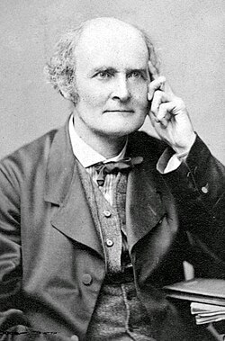

1821-1895
Arthur Cayley

Portrait: Herbert Beraud (1845–1896), Public domain, Wikimedia Commons.
Events (9)
- 1736Graph theory from the Königsberg bridges
developer · Graph theory
- 1844Quaternions: non-commutative algebra from the geometry of 3-space
developer · Algebra
- 1846Group theory from the solution of polynomial equations
systematiser · Algebra
- 1854The abstract group concept
originator · Group & representation theory
- 1855Matrix algebra as an abstract calculus (Cayley)
developer · Algebra
- 1868Beltrami and Klein models of non-Euclidean geometry
developer · Geometry
- 1872Klein's Erlangen programme
developer · Geometry
- 1879Map colouring and the four colour problem (Kempe and Heawood)
developer · Graph theory
- 1965Geometric invariant theory and moduli
originator · Algebraic geometry